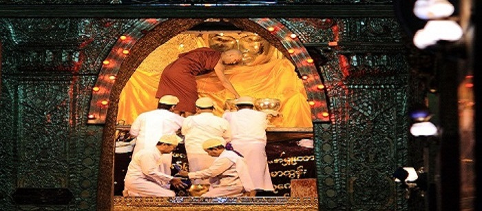
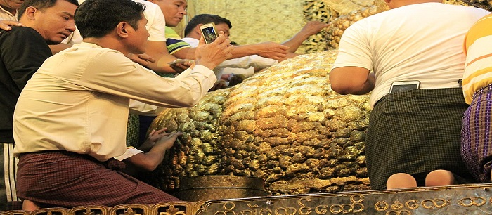
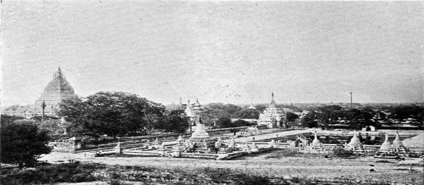
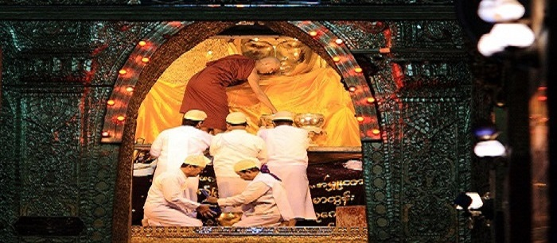
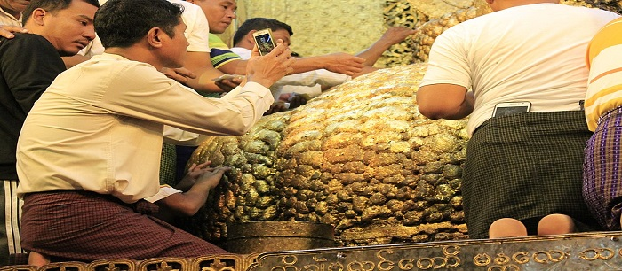
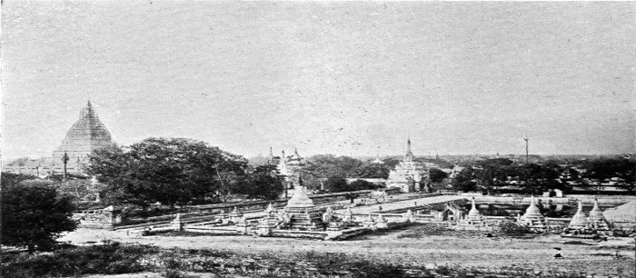
 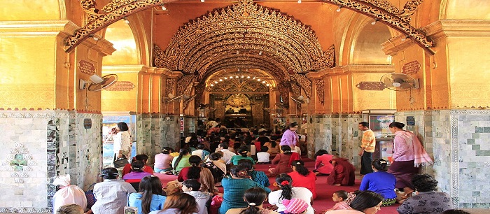
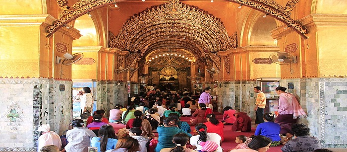

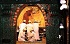
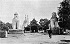
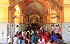
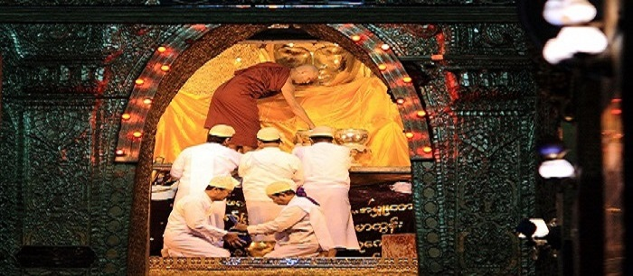
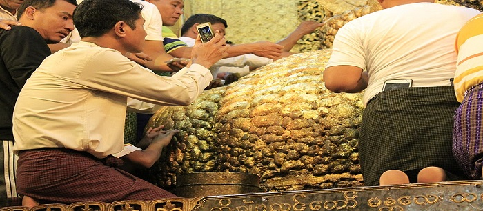
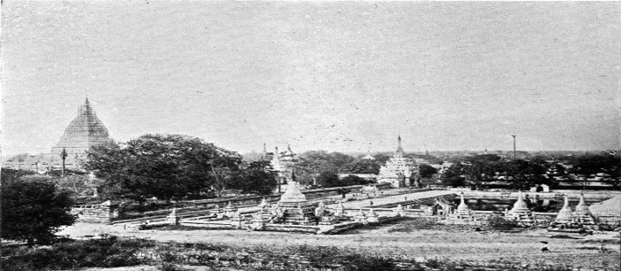
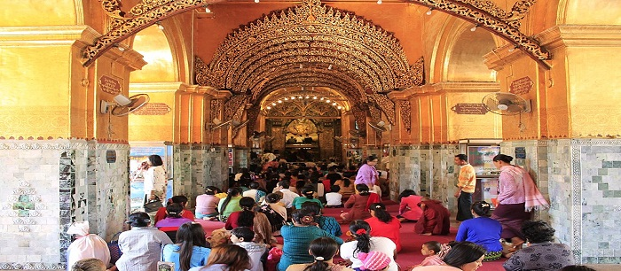
The Mahamuni Buddha Temple is a Buddhist temple and major pilgrimage site, located southwest of Mandalay, Myanmar (Burma).The Mahamuni Image (lit. 'The Great Sage') is enshrined in this temple, and originally came from Arakan.It is highly venerated in Burma and central to many people's lives, as it is seen as an expression of representing the Buddha's life.
Ancient tradition refers to only five likenesses of the Buddha made during his lifetime; two were in India, two in paradise, and the fifth is the Mahamuni Image in Myanmar.[1][2][4][5][6] Legend holds that the Buddha himself visited the Dhanyawadi city of Arakan in 554 BC.King Sanda Thuriya requested that an image be cast of him. Once complete, the Buddha breathed upon it, and thereafter the image took on his exact likeness.
According to legend, the Gautama Buddha visited Dhanyawadi, the capital city of Arakan during his travels on a missionary mission to spread Buddhism.During the 26th anniversary of the King at the time, a devout Buddhist, the Buddha accompanied by Shin Ananda and 500 disciples[7] landed at Salagiri mountain peak near Khaukrah town.The King of Arakan, along with his Chief Queen Sandra Mala (with her retinue of 1,600 ladies in waiting), and an entourage of ministers, generals and officials, paid homage to the Buddha.They were deeply moved by his teachings and upon his departure to Thawuthi (Sravasti), the King insisted that he leave his image for people to worship.For this purpose, the Buddha then sat under a Bodhi tree for a week of meditation.During this time Sakka (in Pali, the ruler of the Tavatimsa, in sanskrit called Trayastri?sa) one of the heavens in Buddhist cosmology, supported by his assistant Vissakamma (or Vishvakarman), moulded a lifelike image of the Buddha using ornaments donated by the king and his people.[8] It is also said that Sakka and Vissakamma created a separate pavilion for the Buddha to live and enjoy during these seven days.[8] After looking at his own lifelike image, believed at the time to have been his only true-likeness,Buddha was pleased and "imbued the image with his spiritual essence", or "enlivened and consecrated" the image, naming it "Candasara".He also stated that the image would last for five thousand years as his representative.
Historian Juliane Schober has very succinctly explained this legend and the cult worship that has evolved around the "living" double image of Mahamuni Buddha:
Another legend narrated in the Arakanese chronicle relates to the nine phenomena that occurred when the image was consecrated in the temple and continued to occur after the Buddha had departed. These nine phenomena were: holy water used for washing the image would not overflow the collecting vessels; the water from the tank that was used for washing the Buddha's head would retain its quality throughout the year; six coloured rays appeared when the devotees worshipped the image in the evenings; the rays faded in the presence of non-believers; the space in the temple would automatically accommodate any number of devotees; the leaves of trees would tilt in the direction of the Buddha image; birds would not fly over the temple; and the stone guardians at the entrance would sense the presence of evil doers and prevent them from entering the temple.
In the ancient history of Arakan, King Anawratha of Pagan (r. 1044�1077) attempted to move the image to Bagan, without success.In 1784, the Burmese under the military leadership of Crown Prince Thado Minsaw of Konbaung dynasty conquered the Kingdom of Mrauk U.The religious relics of the kingdom, including the Mahamuni Buddha image, were confiscated and installed in the Mahamuni temple or pagoda at Amarapura. Amarapura, located within modern-day Mandalay District, had recently become the new royal capital just two years prior. As the Mahamuni image was too large to transport as a whole, it was cut into sections and later reassembled and housed in the new temple.Mandalay became the capital under King Mindon (r. 1853�1878).It was also the capital under his son Thibaw (r. 1878�1885) of the Konbaung Dynasty (1752�1885). When the British annexed Upper Burma in 1885 to prevent the French from dominating it, monarchic rule ended.[18] However, veneration of the Mahamuni image has continued, and is visited and worshipped by many pilgrims, mainly Rakhine, Mon and Burmans peoples.
Several old bronze statues that line the courtyard of the temple have a long history as war loot. They were originally Khmer statues, found at Angkor Wat in Cambodia, and were taken to Ayutthaya in 1431 by the Siamese.In 1564, the Burmese king Bayinnaung conquered Ayutthaya and took thirty such statues to Bago.In 1599, King Razagri of Mrauk U invaded Bago and brought the statues to Mrauk U.Finally, Thado Minsaw took them to Amarapura in 1785.According to local belief, many more of these statues were brought from Arakan.However, King Thibaw melted many of them to cast cannons for fortification of his palace.Of the thirty statues Bayinnaung brought from Siam, only six remain today, and are displayed in the temple complex.
Another legend narrated is linked to the six Khmer bronze statues (three lions�with heads substituted later in Burmese style, a three-headed elephant known as Airavata, and two warriors in the form of Shiva), which are installed in the temple in the northern end of the courtyard. These statues were originally at the Angkor Wat temple complex in Cambodia.Devotees believe that the statues have healing qualities to rub a particular part of the body against the statues to cure themselves of various ailments and diseases.Today, they are a major attraction because of their purported healing qualities.
The Mahamuni image and its precincts suffered damage from fires in 1879 and 1884.In the fire that broke out during the reign of King Thibaw, the seven-tiered spire on the brick temple, devotional halls, causeways and others were burnt down, although the Great Image itself was saved. Gold recovered after the fire was made into a robe that currently adorns the image. In 1887, Minister Kinwun Mingyi U Kaung took charge of the site and in 1896 constructed the present temple around the original shrine built by King Bodawpaya.
In 1996, the military rulers in Burma undertook renovation work on the Mahamuni Pagoda. During this period, the Mahamuni Buddha image was damaged in 1997 when a hole appeared in the belly of the Great Image.[27] It was believed that thieves had drilled the hole in an attempt to steal jewels believed to be secreted within the image.It was reported that a military officer had requested to open the temple in the night, resulting in a meeting of all the senior monks from major monasteries in the area to discuss the matter.Whilst the meeting was in progress, attention was diverted to a purported rape incident committed by a Muslim man on a Buddhist girl.A major riot broke out but it turned out afterward that the Buddhist girl had not been raped at all.It was a coverup to divert attention away from the Buddha so it could be repaired.However, the mystery remains as to whether any jewellery did exist and was actually removed from the Great Image at all.
The Mahamuni Temple or Pagoda is a complex of structures located along a road from Mandalay leading to the southwest. It was originally located on A brick paved road which was constructed from the Royal Palace of King Bodawpaya to the eastern gate of the temple, although only remnants of this road can still be seen.A major teaching monastery of some 400 monks of the Thudhamma Nikaya (order), is one among the many monasteries which are adjacent to the Pagoda. The temple has a central shrine and is framed by an extensive grass lawn. The arcades leading to the main shrine have many kiosks, selling religious paraphernalia such as incense, candles, rosaries, flowers, robes, sandals etc., and various restaurants and tea shops. The sanctum sanctorum, where the large Mahamuni image is deified, is a small chamber and has a roof covering made up of seven pyatthat meaning tiered roofs (derivative of the Sanskrit word prasada).The ceiling has an ornate mosaic covering. The arcades are supported by 252 gilded and carved columns adorned with fine frescoes.
The Mahamuni Buddha image is housed in a small gandhaku?i chamber, seated on a throne in a divine posture known as the Bhumisparsa Mudra. This posture or mudra symbolises Buddha's vanquishing of Mara). The legs are crossed with feet turned inwards, and the right hand touches the ground ritualistically, as a witness of his past deeds.The image is cast in bronze and weighs 6.5 tonnes and is erected on a 1.84 metres (6.0 ft) high pedestal and reaches a height of 3.82 metres (12.5 ft).Its shoulders measure 1.84 metres (6.0 ft) and its waist measures 2.9 metres (9.5 ft).It is draped in royal costumes with "Brahmanic cords (salwe) and regalia crossing his chest".The image is crowned, bejewelled with diamonds, rubies and sapphires. The left hand appears imprecise, unusually large, and is seen resting in the lap with an upturned palm.
Gold leaves are regularly applied to the face of the Mahamuni Buddha by male devotees. Consequent to the frequent application of gold leaves, the coating of gold (thickness 15 centimetres (5.9 in)) has given a shapeless contour to the Mahamuni image. However, it is also noted that the right hand, crown and other iconographic characteristics of royalty are free of gold leaf covering, which gives an impression that these were later additions to the original image of the Mahamuni.In 1884, when the pagoda was burnt down, 91 kilograms (201 lb) of gold was recovered from the site, which represents the continued historical veneration and perpetuation of the cult of Mahamuni.
A large number of 'inscription stones' collected by King Bodawpaya are seen in a long gallery in the southeastern corner of the temple courtyard. These inscriptions, some of which are made from gilded marble and sandstone, have been collected from many regions of the country.There is also a large water tank in the southeast direction of the temple where fish and turtles are fed with rice cakes by the large number of pilgrims who visit the temple every day.Adjacent to the Buddha temple is the Mahamuni Museum, which contains displays of Buddhism throughout Asia.
On 17 February 1988, the present Sayadaw Bhaddanta Pa��ava?sa of Htilin Monastery and Pitaka Kyaung initiated the ritual of daily face washing of the deity at dawn. This ritual commences every morning at 4 am or 4:30 am when monks wash the face and brush the teeth of the Buddha image.It is an elaborate ritual performed for over an hour by a senior monk dressed in monastic attire, assisted by several lay helpers, dressed in white and wearing formal headdress. As soon as the drums are struck, the senior monk residing in the adjoining monastery enters the sanctum and starts the formal face washing ritual with a succession of fresh towels, offered by devotees. He then performs the act of cleaning the Mahamuni's teeth with a large brush followed by one more sequence of cleaning with fresh towels.After this, sandalwood paste is applied to the image and it is again cleaned with towels and finally sprinkled with scented water. After the ceremony is completed, the used towels are returned to the devotees who keep these towels with reverence in their home shrines.
On special occasions, such as Uposatha day, an orange stole is placed around its shoulders by the presiding monk and is fanned.A major congregation of devotees witness the rituals; some men sit in the front enclosure while others including women and children sit in the middle and rear end of the foyer. Devotees offer food and other items brought by them on a tray to the deity and chant prayers while the rituals are being performed.During the winter season, the image is covered by a cloak of the monastic order.
During the reign of Burmese monarchs, offerings were made daily to the Great Image in a formal way. Food and other offerings, sheltered by a Royal white umbrella, were taken in a procession from the palace, escorted by a Minister, as an honour due to a sovereign head of the state.
A major annual pagoda festival known as the 'Mahamuni Paya Pwe' ('pwe' meaning "festival") is held in early February, at the end of the Buddhist Lent to celebrate the history of the pagoda. During this festival, aside from the daily rituals, the Pa??hana from a "Book of Conditional Relations" in Abhidhamma Pi?aka is recited.[31] This book is a philosophical text which Buddha recounted to his mother in a sermon in Tavatimsa heaven and is a sacred scripture in the Pali language.[31] The Pattana recitation is a special feature, which continues for several days. Monks recite from the scriptures, in groups of two or three. The festivities also include various forms of entertainment programmes such as dance, music, theatre etc., and there is also a social event, allowing families and friends gather to greet each other.[31] Given that large crowds of pilgrims are attracted during the festive season, guards are posted near the Great Image and video cameras are placed in many parts of the temple precincts to protect it.